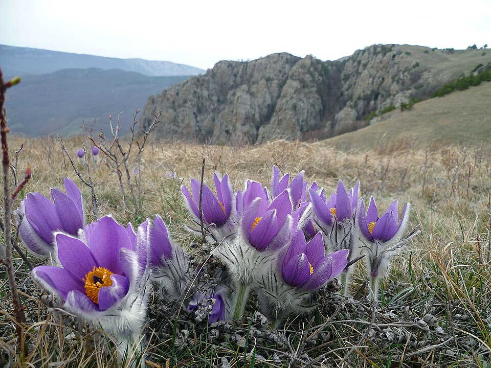

Сон-трава розкриття
Pulsatilla patens – одна з найніжніших весняних квітів наших лісів.
Сон-трава розкриття – багаторічна трав'яниста рослина з сімейства жовтецевих. Вона цвіте однією з перших навесні, коли на землі ще подекуди лежить сніг. Фіолетові квіти мають шовковисте опушення, що робить рослину особливо привабливою.
Біологічні особливості
- Тип рослини: багаторічна трав'яниста.
- Середовище зростання: сухі, добре освітлені узлісся та схили.
- Період цвітіння: рання весна.
- Спосіб розмноження: переважно насінням.
Чому вид зникає?
- Знищення природних біотопів (розорювання, забудова територій).
- Масове зривання квітів для букетів.
- Випасання худоби на ділянках, де зростає сон-трава.
Висновок: сон-трава розкриття потребує суворої охорони та заборони збору в природі. Рослину доцільно вирощувати в ботанічних садах і на спеціально відведених ділянках.